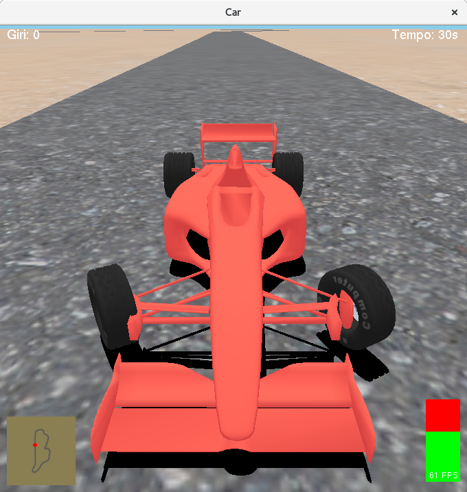
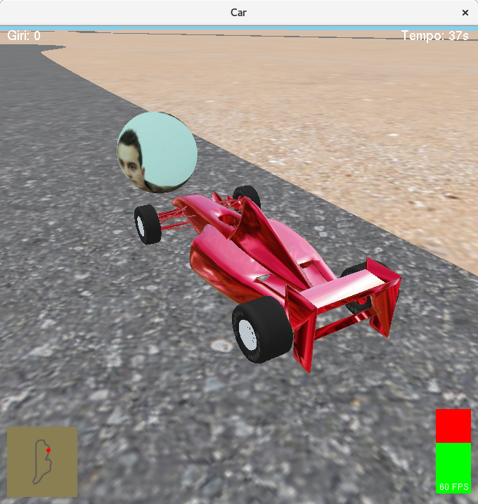
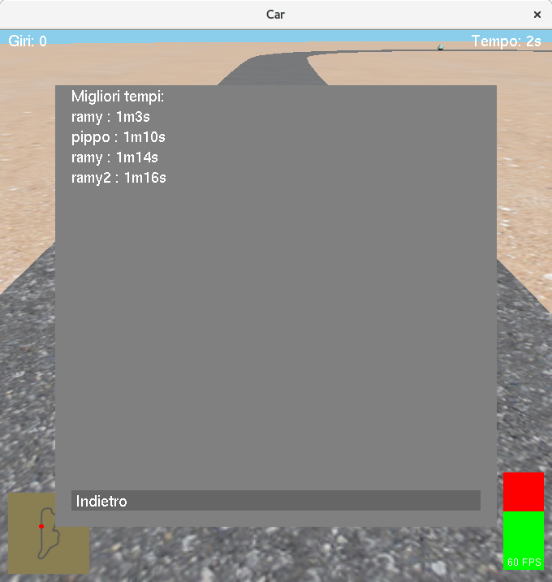

Studente: Ramy Al Zuhouri
Matricola: 0000731011
Corso: Laurea Magistrale in Informatica
Università di Bologna
Introduzione
Questa documentazione ha lo scopo di descrivere come è stato realizzato il progetto di Grafica Computerizzata 2015/16, spiegando il
funzionamento a livello generale del programma, le regole del gioco che è stato realizzato, e le scelte implementative. Si è
scelto di realizzare un videogioco che permette di controllare una macchina, che può essere mossa e controllata all'interno di una pista
utilizzando la tastiera, o alternativamente un joystick.
Sono stati utilizzati dei modelli tridimensionali, alcuni dei quali sono stati forniti in partenza, altri sono stati realizzati utilizzando
il software di modellazione 3D Blender. Il progetto è stato realizzato in C++, utilizzando le librerie grafiche di OpenGL, GLUT, SDL
e GLEW.

Figura 1: inquadratura con camera posteriore e ombre attivate.
Funzionamento del gioco
Il gioco parte con un automobile ferma all'inizio della pista. È possibile uscire fuori pista, dove è presente della sabbia, senza
subire delle penalizzazioni. È però necessario seguire la pista senza tagliare il percorso, altrimenti si rischia di non vedersi
conteggiati i giri. Lo scopo del gioco è quello di effettuare tre giri di pista con il minor tempo possibile. Di tanto in tanto, vengono
generate delle sfere in maniera casuale, contenenti una foto personale. Le sfere quando vengono generate, vengono posizionate ad una distanza
ragionevole dall'auto, lungo il percorso e mai in una posizione tale che è necessario tornare indietro per prenderle. Quando la sfera viene
toccata, succedono due cose:
Vengono sottratti 15 secondi dal tempo di gioco.
La sfera viene conteggiata (viene visualizzata in basso nella schermata - vedi figura 3). Possono essere accumulate fino a tre sfere contemporaneamente. Quando si possideono tre sfere, è possibile
utilizzare il turbo, ovvero l'auto aumenta la sua velocità e la sua accelerazione in maniera significativa per 10 secondi.
Non viene mai generata più di una sfera contemporaneamente. Inoltre, una volta generata, una sfera rimane attiva per una durata massima di 30
secondi, oltre la quale scompare.
Lo scopo del gioco è quello di effettuare tre giri di pista nel minor tempo possibile. Una volta finiti i tre giri di pista, è
possibile salvare il proprio punteggio, inserendo il proprio nome.
PS: quando l'automobile esce dai confini della mappa, viene riposizionata nel punto di partenza e la sua velocità viene resettata. Inoltre
vengono assegnati 10 secondi di penalità.

Figura 2: auto in prossimità di una sfera. Figura 3: tutte e tre le sfere sono state raccolte: è possibile usare il turbo.
Controlli e indicatori
Per controllare l'auto con la tastiera, si utilizzano i seguenti tasti:
'W' per accelerare.
'S' per decelerare (o per aumentare la velocità in retromarcia).
'A' per sterzare a sinistra.
'D' per sterzare a destra.
Frecce direzionali: possono essere utilizzati in alternativa ai tasti 'w', 'a', 's', 'd'.
Alternativamente è possibile utilizzare un joystick per controllare l'auto. Per attivare il joystick, è necessario premere il tasto 'j'.
Una volta attivato, il joystick può essere disattivato premendo nuovamente il tasto 'j'*. Una volta attivato il joystick, si possono utilizzare i
seguenti controlli:
L'asse x del joystick controlla lo sterzo.
L'asse y del joystick controlla l'acceleratore.
A differenza della tastiera, l'input del joystick è continuo, ovvero è sufficiente mantenere un controllo del joystick in una certa posizione - come ad esempio la manetta - per accelerare di continuo con un'intensità proporzionale alla posizione della manetta. Con la tastiera
invece l'accelerazione è discreta: ovvero l'auto può accelerare, può decelerare oppure può non effettuare nessuna delle
due cose, però non è possibile accelerare in maniera ridotta (ad esempio al 40% dell'accelerazione massima). Per far ciò occorre
premere e rilasciare i tasti di continuo. Ciò rende l'auto molto più controllabile se si utilizza un joystick.
Il gioco è stato testato con un joystick Logitech Extreme 3D Pro, configurato in tal modo:
Tasto whitespace: attiva il turbo (disponibile soltanto quando si possiedono tre sfere).
Rotellina del mouse: controlla lo zoom.
Tasto 'o': abilita / disabilita le ombre.
Tasto 'k': abilita / disabilita l'environment map della macchina (se disattivata l'auto viene disegnata utilizzando un materiale).
Tasto 'l': abilita / disabilita la visualizzazione in wireframe dell'auto.
Tasto 'p': abilita / disabilita il pilota automatico. Se attivato, il pilota automatico controlla l'auto facendola andare avanti ad una
velocità costante, senza utilizzare lo sterzo.
Tasto escape: apre / chiude il pannello di controllo (vedi sotto).
Inoltre sono presenti i seguenti indicatori:
In alto a sinistra viene visualizzato il numero di giri di pista effettuati.
In alto a destra viene visualizzato il tempo di gioco.
In basso a sinistra viene visualizzata la mappa, dove la posizione attuale è indicata con un puntino rosso.
In basso al centro vengono visualizzate le sfere che sono state collezionate.
In basso a destra viene visualizzata la barra dei frame al secondo, da leggere così: la parte verde è tanto più grande
quanti sono i frame al secondo attuali. La parte rossa riempie il resto della barra. Il numero massimo di frame al secondo è pari a 100.
L'altezza della barra verde è quindi proporzionale al numero massimo di frame al secondo; cioè ad esempio se la scena viene disegnata a
10 frame al secondo, un decimo della barra è colorata di verde.
*NB: su alcuni sistemi Linux, la tastiera viene rilevata automaticamente come joystick virtuale. Ciò significa che attivando il joystick,
è possibile che i comandi vengano rilevati anche se non è stato collegato alcun joystick.
Pannello di controllo
È possibile mettere il gioco in pausa premendo il tasto escape. Quando il gioco è in pausa, viene visualizzato il pannello di controllo.
Vengono visualizzate le impostazioni di gioco correnti, oltre ai comandi che sono necessari a cambiarle (vedi figura 4). Inoltre, premendo il tasto
'ricomincia' è possibile riniziare il gioco; premendo il tasto 'Esci dal gioco' la finestra viene distrutta e il programma termina immediatamente.
Quando vengono effettuati tre giri di pista, il gioco finisce e viene visualizzato il pannello di controllo, dove è possibile inserire il nome
utilizzando i tasti alfanumerici e il tasto backspace per cancellare i caratteri. È possibile salvare il tempo ottenuto cliccando sul tasto
'Salva', dopodichè viene mostrata la scoreboard (vedi figura 6). Una volta salvato il punteggio, occorre premere il tasto 'Indietro' e riniziare il
gioco. La scoreboard non è visualizzabile soltanto a fine gioco, ma può essere aperta in qualsiasi momento cliccando l'apposito tasto del
pannello di controllo.
Figura 4: pannello di controllo durante il gioco. Figura 5: pannello di controllo a fine gioco. È possibile inserire il nome e salvare il tempo ottenuto.

Figura 6: Scoreboard. Vengono visualizzati i migliori 10 tempi ottenuti.
Scelte progettuali
Per creare la finestra del gioco e per gestire gli eventi è stata utilizzata la libreria GLUT, che permette inoltre di registrare dei timer, che sono
risultati utili per gestione degli step fisici e per il conteggio dei frame al secondo. Il timer principale che gestisce i passi della simulazione, effettuae
le seguenti operazioni ogni 1/100 di secondo:
Aggiorna la fisica, cioè ricalcola la velocità, la posizione e lo sterzo dell'auto leggendo i comandi dell'utente.
Effettua un algoritmo molto semplificato di collision detecion (si tratta semplicemente di verificare la distanza tra l'auto e la sfera) per
controllare se l'auto sia andata sopra ad una sfera, che in tal caso viene collezionata.
Gestisce i checkpoint. Il sistema dei checkpoint viene utilizzato per verificare che l'utente non "bari", tagliando il percorso. Sono presenti 11
checkpoint. L'automobile deve andare sopra (o almeno ad una distanza ragionevole) a tutti i checkpoint; il giro viene conteggiato soltanto quando
vengono raggiunti tutti e 11 i checkpoint.
Si controlla che l'automobile non sia uscita dalla mappa. In tal caso viene riposizionata al punto di partenza con velocità 0 e 10 secondi
di penalità
Se il pilota automatico è abilitato, prima di aggiornare la fisica vengono dati gli opportuni comandi che servono a mantenere una velocità
moderata e costante.
Viene chiamata la funzione glutPostRedisplay(), che marca la finestra come "da ridisegnare" in modo tale alla prossima iterazione del main
loop di GLUT venga effettivamente ridisegnata. Ciò significa che il numero "target" di frame al secondo raggiungibili è pari a 100.
Inoltre, un secondo timer effettua le seguenti operazioni ogni secondo:
Il numero di frame al secondo ottenuto nell'ultimo secondo viene aggiornato, in modo tale che possa essere visualizzato sulla barra in basso a destra.
Viene aggiornato il tempo di gioco.
Viene controllata la generazione delle sfere. Se non è presente alcuna sfera sulla mappa, la probabilità di generare una sfera è pari a
1/15 ogni secondo. Inoltre anche la posizione è casuale: vengono scelti dei punti casuali nei quali è possibile posizionare la sfera nel caso che venga generata. Inoltre viene aggiunto un offset casuale. La posizione dipende dal checkpoint corrente (vedi lista precedente): non è possibile che venga generata una sfera in una posizione per la quale è necessario tornare indietro lungo il percorso.
Nel caso che il turbo sia stato attivato, viene aggiunto un secondo al tempo di utilizzo (una volta raggiunti 10 secondi, viene disabilitato).
Al fine di ottimizzare il rendering real time, si è deciso di utilizzare i vertex buffer object (VBO) invece di disegnare la scena in immediate mode
(ovvero utilizzando le primitive - con glBegin() e glEnd()). I VBO sono una funzionalità di OpenGL (utilizzabile tramite l'estenzione GLEW), che
permette di inviare dati come vertici, normali e coordinate texture direttamente alla scheda grafica, dove vengono memorizzati in un buffer apposito invece di inviare
i dati uno alla volta utilizzando le primitive. Ciò ha comportato un discreto miglioramento delle performance
Inoltre, un'ulteriore ottimizzazione consiste nel memorizzare i vertici di una mesh in un VBO, e di utilizzare un altro VBO per memorizzare gli indici delle facce da
disegnare, onde evitare di memorizzare i vertici più volte del necessario, con un fattore di risparmio memoria pari all'incirca a 6. Ogni mesh utilizza quindi:
Un VBO contenente tutti i vertici della mesh.
Un VBO contenente tutti gli indici della facce da disegnare.
Nel caso che venga utilizzata una texture, si utilizza un VBO per memorizzare le coordinate texture dei vertici.
In caso sia necessario, è possibile calcolare le normali per vertice, che vengono memorizzate in un apposito VBO.
È possibile inoltre utilizzare un VBO per memorizzare i colori di ogni vertice.
È stata implementata una funzione in grado di caricare un modello tridimensionale da un apposito file obj, generando automaticamente un oggetto di tipo Mesh. Si è scelto di utilizzare delle facce triangolari: in fase di caricamento ogni faccia rettangolare letta viene scomposta in due
facce triangolari. In questo modo è stato più semplcie calcolare le normali.
Una volta creato un oggetto di tipo mesh, i dati vengono inviati ai buffer ma ne viene mantenuta una copia al fine di effettuare operazioni come ad esempio il ricentraggio della mesh, e il calcolo del bounding box. Infatti, per rendere più semplice le operazioni di rotazione delle mesh attorno al proprio
baricentro (ad esempio una ruota della macchina deve poter ruotare attorno al proprio baricentro per sterzare), si è di ricentrare le mesh nel seguente modo:
viene calcolato il bounding box della mesh, poi ogni vertice viene traslato opportunamente, in maniera tale da far coincidere il centro del nuovo bounding box della mesh con l'origine degli assi. In questo modo si ottengono delle mesh centrate, in grado di ruotare attorno a se stesse. Infine, quando tutte queste operazioni sono state effettuate, è possibile cancellare i dati ridondati, ovvero quelli che non sono memorizzati nel buffer, al fine di ottimizare l'utilizzo della memoria.
Sono state utilizzate le seguenti risorse pre-fornite:
Un file obj contenente lo chassis dell'automobile.
Quattro file obj per le ruote: per le ruote anteriori/posteriori e per i cerchioni anteriori/posteriori.
Un environment map da mappare sullo chassis dell'automobile. Si è scelto di generarne automaticamente le coordinate.
Una texture da applicare alle ruote, contenente una scritta da proiettare sulle gomme. In questo caso si è scelto di utilizzare il texture
mapping.
Una texture del cielo, che è stata applicata su una sfera che racchiude la pista, generando le coordinate in maniera automatica.
Una texture per la sabbia, ottenuta gratuitamente dal sito sketchtextureclub .
Una texture per l'asfalto, anche questa ottenuta dal sito sketchtextureclub .
Inoltre, sono state create le seguenti risorse:
Una pista in formato obj, realizzata col software di modellazione 3D Blender. Si è scelto di utilizzare delle curve NURBS per tracciare l'andamento
della pista, a partire dalle quali è stata generata una mesh.
Un'immagine 2D della pista da utilizzare per la mappa da visualizzare in basso a sinistra, anch'essa generata con Blender.
Un modello tridimensionale di una sfera creato utilizzando Blender. Come nel caso del cielo, si sarebbe potuto utilizzare la funzione gluSphere, ma
al fine di sperimentare tutte le funzionalità di OpenGL si è preferito utilizzare il texture mapping.
Una foto personale in formato PNG.
Per caricare le texture sono state utilizzate le librerie SDL e SDL_Image. È stato creato un oggetto di tipo Mesh caricando il file obj della pista, sul
quale è stata applicata la texture dell'asfalto utilizzando il texture mapping. Allo stesso modo, è stata utilizzata una mesh per le sfere, al quale
è stata applicata la texture della foto personale.
Per quanto riguarda le luci, sono stati utilizzati due tipi di sorgenti luminose: una luce direzionale costituisce la sorgente di illuminazione principale, posta ad una grande altezza dal centro della pista; inoltre sono state utilizzate due luci spot per i fari anteriori dell'auto.
Difficoltà riscontrate
Le principali difficoltà riscontrate riguardano il calcolo dei passi fisici della simulazione: inizialmente si era deciso di calcolare la fisica nel callback display di GLUT, che si occupa di ridisegnare la scena, ignorando prima di tutto il fatto che su macchine diverse si può ottenere un numero diverso di frame al secondo e quindi l'auto viaggiava più velocemente su computer con GPU più veloci, e più lentamente su computer con
GPU più lente; e secondo poi, si ignorava il fatto che tra un frame e l'altro possono trascorrere degli intervalli diversi di tempo. Ciò significa che
se si aggiorna la posizione dell'auto di una quantità costante ad ogni frame, potrebbe accadere che tra un frame e l'altro la velocità dell'auto risulta
diversa. Ciò si traduceva in un andamento "a scatti" dell'auto. Il problema è stato risolto utilizzando un timer che aggiorna la fisica a passo costante, ogni 1/100 di secondo.